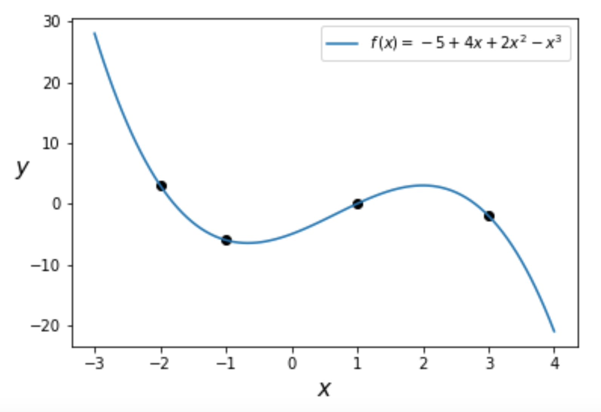
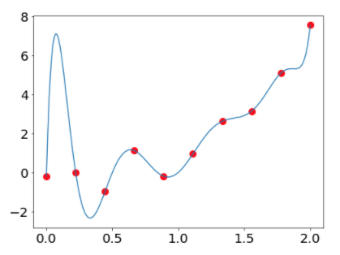
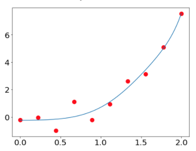
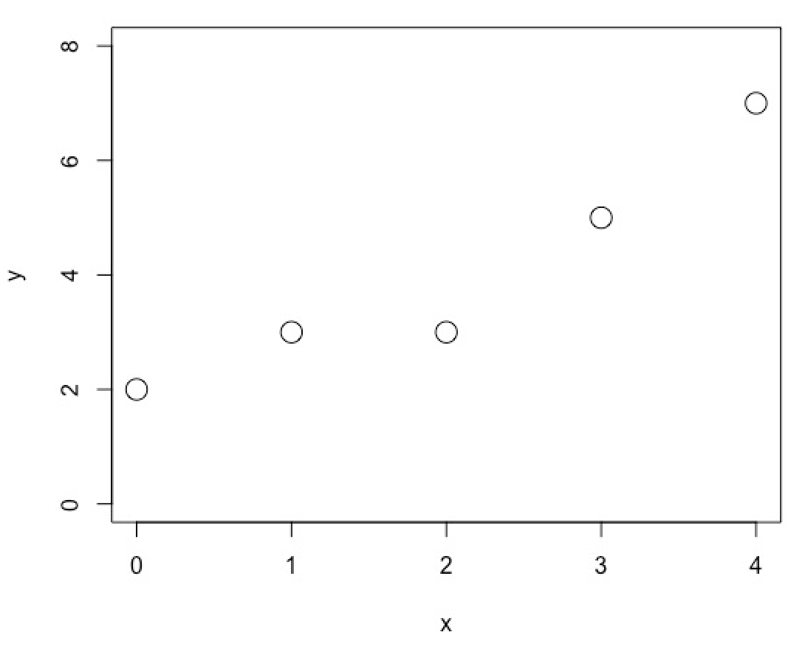
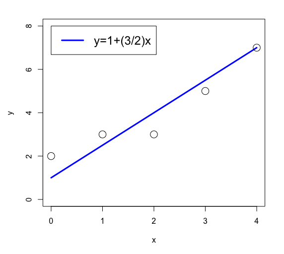
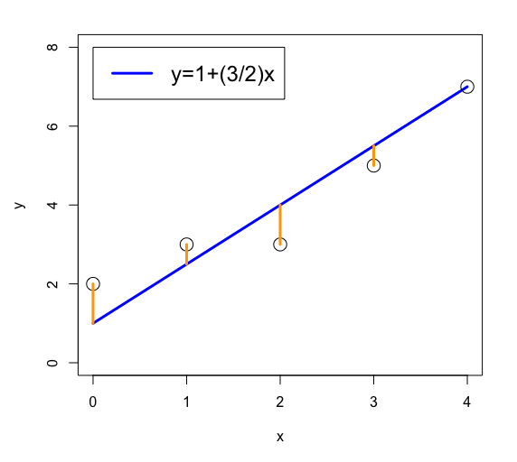
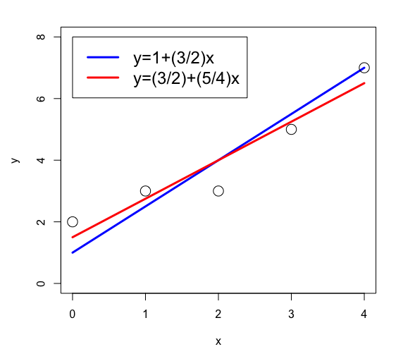
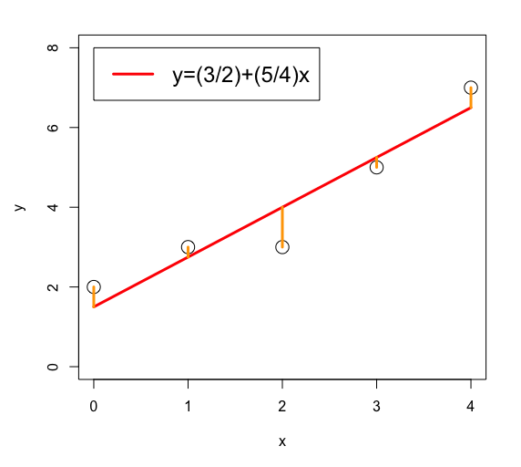
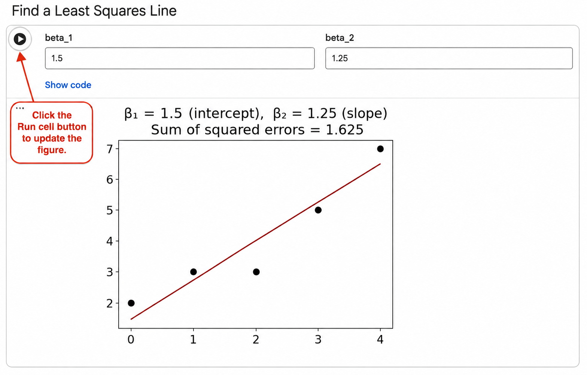
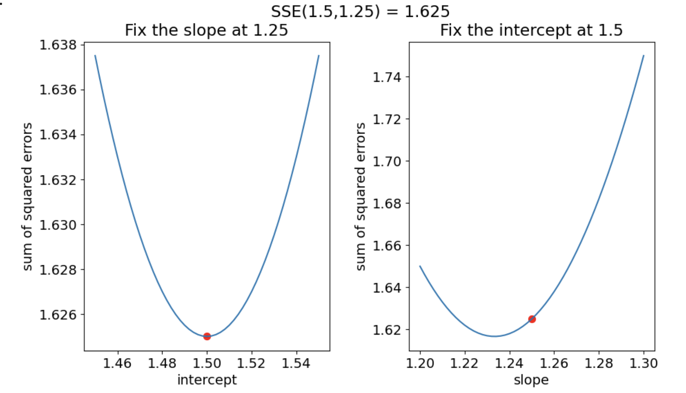

A Multivariable Optimization Problem
The functions \[f(x,y,z) = \sqrt{x^2+y^2+z^2}, \quad g(x_1, x_2, x_3, x_4) = \sin(x_1 + x_2) e^{x_3 x_4}\] are called multivariable functions. In this section we will see how the problem of optimizing a multivariable function naturally arises in the context of fitting a line to data.
Polynomial Interpolation
Consider the problem of finding the cubic polynomial(s) \[ f(x) = \beta_1 + \beta_2 x + \beta_3 x^2 + \beta_4 x^3 \] with a graph that passes through the following \(4\) points in the \(xy\)-plane. \[ (-2,3), \qquad (-1, -6), \qquad (1,0), \qquad (3,-2) \]
We seek values of the coefficients \(\beta_1, \beta_2, \beta_3, \beta_4\) so that the cubic polynomial satisfies the constraints: \[ f(-2) = 3, \qquad f(-1) = -6, \qquad f(1) = 0, \qquad f(3) = -2 \]
One can show that the coefficients \(\beta_1, \beta_2, \beta_3, \beta_4\) are uniquely determined by the constraints and are given by:
\[ \beta_1 = -5, \qquad \beta_2 = 4, \qquad \beta_3 = 2, \qquad \beta_4 = -1 \]

It turns out that there is always a unique polynomial of degree at most \(n-1\) that passes through \(n\) points with different \(x\) values.
Theorem 1 (Polynomial Interpolation) Consider the \(n\) data points
\[ (x_1,y_1),\qquad (x_2,y_2),\qquad \ldots,\qquad (x_n,y_n), \]
where the values \(x_1,x_2,\ldots,x_n\) are distinct.
Then there is a unique polynomial of degree at most \(n-1\),
\[ p(x)=\beta_1+\beta_2x+\cdots+\beta_nx^{n-1}, \]
that passes through all \(n\) data points.
The graphs of high-degree polynomials that pass exactly through many data points can often be much wigglier than the variation actually suggested by the data, particularly if the data is noisy.
In the following figure we plot the unique degree \(9\) polynomial that fits the \(10\) given data points. As you can see from the plot, the polynomial does not smoothly capture the trend in the data.

One way to avoid this problem is to allow the curve to pass nearby the points rather than through them. The degree \(9\) polynomial in the next plot tracks the trend of the data much better than the polynomial that exactly passes through all 10 points.

The above degree \(9\) polynomial was found by relaxing the requirement that the graph of the polynomial pass through the given points while penalizing unnecessary complexity in the high-degree model. This technique is called regularization and will be discussed later.
In the next section, we will look at a simpler approach to tracking the trend of the data by fitting a low-degree polynomial such as a line.
Least Squares Lines
Can we find \(\beta_1, \beta_2\) such that the line \(y = \beta_1 + \beta_2 x\) passes through the following points?
\[ (0,2), \qquad (1,3), \qquad (2,3), \qquad (3,5), \qquad (4,7) \]
We seek values of the coefficients \(\beta_1, \beta_2\) so that \(f(x) = \beta_1 + \beta_2 x\) satisfies the constraints: \[ f(0) = 2, \qquad f(1) = 3, \qquad f(2) = 3, \qquad f(3) = 5, \qquad f(4) = 7 \]
The first constraint says that \[2 = f(0) = \beta_1 + \beta_2 (0)\] which gives \(\beta_1 = 2\)
The second constraint says that \[3 = f(1) = \beta_1 + \beta_2(1) = 2 + \beta_2\] which gives \(\beta_2 = 1\).
Thus, the first two points already determine the unique line \(y = 2 + x\). Checking the third constraint gives the contradiction \[3 = f(2) = 2 + 2 = 4\]
Since no line passes through the first three points, there is no line that passes through all five points.
A quick plot of the points makes it clear why no line fits the data exactly.

Can we pick \(\beta_1, \beta_2\) so that \(y = \beta_1 + \beta_2 x\) passes nearby the given points?
Let’s try \(\beta_1 = 1\) and \(\beta_2 = 3/2\).

There are infinitely many lines that pass nearby the data. How do we determine the best line?
We need a way to measure how well a given line fits the data. One common measure of error is the sum of squared errors (SSE).
Definition: Sum of Squared Errors (SSE)
Suppose we fit a line \(y = \beta_1 + \beta_2 x\) to the \(n\) data points \[ (x_1, y_1), \qquad (x_2, y_2), \qquad \cdots \qquad (x_n, y_n) \]
The sum of squared errors is \[\operatorname{SSE}(\beta_1, \beta_2) = \displaystyle\sum_{i=1}^n (\beta_1 + \beta_2 x_i - y_i)^2\]
For the data points \[ (0,2), \qquad (1,3), \qquad (2,3), \qquad (3,5), \qquad (4,7) \] and the line \(y = 1 + (3/2)x\) we calculate
\[ \begin{align*} \operatorname{SSE}(1, 3/2) &= \displaystyle\sum_{i=1}^5 (1 + (3/2) x_i - y_i)^2 \\ &= (1 - 2)^2 + (5/2 - 3)^2 + (4 - 3)^2 + (11/2 - 5)^2 + (7 - 7)^2 \\ &= 1 + 1/4 + 1 + 1/4 + 0 \\ &= 2.5 \end{align*} \]
Geometrically, the magnitude of each error is the vertical distance between a data point and the line. The orange vertical segments in the following figure illustrate these distances.

The sum of squared errors is obtained by squaring the length of each of these vertical segments and adding the results.
Why do we use the sum of squared errors rather than simply the sum of errors?
If we used the sum of errors, then errors of opposite signs would cancel out.
How can we reduce the SSE? Note that \(\beta_1\) is the \(y\)-intercept and \(\beta_2\) is the slope. Looking at Figure 6, it appears that raising the line and tilting it down may allow it to pass closer to the points. We can raise the line by increasing \(\beta_1\) (the \(y\)-intercept) and we can tilt it down by decreasing \(\beta_2\) (the slope).
The figure below shows the effect of increasing \(\beta_1\) to \(3/2\) and decreasing \(\beta_2\) to \(5/4\).

Show that \(\operatorname{SSE}(3/2, 5/4) = 1.625\).
We calculate
\[ \begin{align*} \operatorname{SSE}(3/2, 5/4) &= \displaystyle\sum_{i=1}^5 (3/2 + (5/4) x_i - y_i)^2 \\ &= (1.5-2)^2 + (2.75-3)^2 + (4-3)^2 + (5.25-5)^2 + (6.5-7)^2 \\ &= 1.625 \end{align*} \]
The proposed changes to \(\beta_1, \beta_2\) reduce the SSE from \(2.5\) to \(1.625\). The figure below also shows the reduction in the lengths of the orange vertical line segments.

We have now computed the SSE for two different lines. What does it mean for a line to be a best line relative to the SSE measurement?
Definition: Least Squares Line
Consider the \(n\) data points \[ (x_1, y_1), \qquad (x_2, y_2), \qquad \cdots \qquad (x_n, y_n) \] and the sum of squared errors function \[ \operatorname{SSE}(\beta_1, \beta_2) = \displaystyle\sum_{i=1}^n (\beta_1 + \beta_2 x_i - y_i)^2 \]
We call \(y = \hat{\beta}_1 + \hat{\beta}_2 x\) a least squares line if for all choices of \(\beta_1, \beta_2\) we have that \[\operatorname{SSE}(\hat{\beta}_1, \hat{\beta}_2) \leq \operatorname{SSE}(\beta_1, \beta_2)\]
To find the least squares line in our case we want to minimize the multivariable SSE function:
\[ \operatorname{SSE}(\beta_1, \beta_2) = \displaystyle\sum_{i=1}^5 (\beta_1 + \beta_2 x_i - y_i)^2 \]
Definition: Global Minimum
A function \(f\) has a global minimum at a point if the value of \(f\) at that point is less than or equal to the value of \(f\) at every other point.
Thus, finding a least squares line is equivalent to finding values of \(\beta_1,\beta_2\) at which the SSE function has a global minimum.
So far, we know that \[\operatorname{SSE}(1, 3/2) = 2.5, \qquad \operatorname{SSE}(3/2, 5/4) = 1.625\]
Here are some important mathematical and computational questions to ponder for our example:
- Does the function \(\operatorname{SSE}(\beta_1, \beta_2)\) have a global minimum?
- If \(\operatorname{SSE}(\beta_1, \beta_2)\) has a global minimum, is the corresponding least squares line unique?
- If there is a unique least squares line, how do we find it?
We will soon be able to answer all of these questions.
Exercise: Explore the SSE Function
Currently our best known line has an SSE of \[\operatorname{SSE}(3/2, 5/4) = 1.625\]
Run the following code in Google Colab to explore the SSE for different values of \(\beta_1\) and \(\beta_2\).
Change the values of \(\beta_1\) and \(\beta_2\), then run the cell to update the figure.

Can you find \(\beta_1,\beta_2\) such that \(\operatorname{SSE}(\beta_1,\beta_2)<1.625?\)
What strategy did you use to find smaller values of the SSE?
What is the smallest SSE value that you can find?
How did you know when to stop looking for a smaller SSE value?
Do you think your strategy would be practical for optimizing a general multivariable function? Explain.
Exercise: Discover Coordinate Descent
We can better understand the multivariable function \(\operatorname{SSE}(\beta_1,\beta_2)\) by focusing on how it depends on a single variable at a time.
If we fix the slope at \(\beta_2 = 1.25\), we can graph the function of a single variable:
\[\operatorname{SSE}(\beta_1) = \operatorname{SSE}(\beta_1,1.25)\]
for values of the intercept \(\beta_1\) near \(1.5\).
If we fix the intercept at \(\beta_1 = 1.5\), we can graph the function of a single variable:
\[\operatorname{SSE}(\beta_2) = \operatorname{SSE}(1.5,\beta_2)\]
for values of the slope \(\beta_2\) near \(1.25\).

Looking at Figure 10, which parameter should you change to reduce the SSE?
Should you increase or decrease that parameter in order to reduce the SSE?
Change \(\beta_2\) (the slope).
Decrease \(\beta_2\) (the slope) to around \(1.235\).
Run the following code in Google Colab to look for a least squares line.
Hint: Use the provided graphs to systematically reduce the SSE.
What strategy did you use to find smaller values of the SSE?
What is the smallest SSE value that you can find?
How did you know when to stop looking for a smaller SSE value?
Do you think your strategy would be practical for optimizing a general multivariable function? Explain.
Have you found a local minimum of the SSE? Give evidence to support your answer.
Have you found a global minimum of the SSE? Give evidence to support your answer.